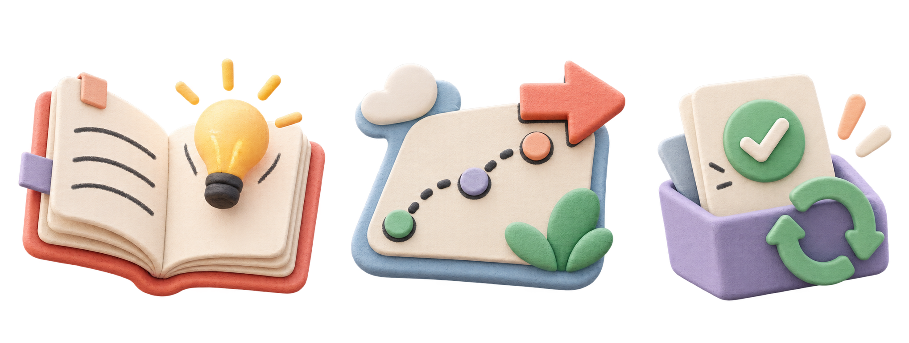

AI 实战共学 · 先做成一件事
让 AI 不止会聊天，
还会替你干活。
不用追完所有工具。带着眼下要处理的工作进来：先说清问题，再选路线，最后带走一份能直接用的成果。
飞书知识库 + 付费社群答疑 · 边学边干，直到形成 SOP 闭环
AI 实战共学 · 先做成一件事
不用追完所有工具。带着眼下要处理的工作进来：先说清问题，再选路线，最后带走一份能直接用的成果。
飞书知识库 + 付费社群答疑 · 边学边干，直到形成 SOP 闭环
一眼看懂 · AI 怎样进入一项工作
AI 现场 / 每周实验 本周 3 条 · W38
不追热闹，只留下会改变工作方式的变化：发生了什么、谁的工作会变、你今天可以试什么。
带着你的问题来信息源OpenAI NewsGoogle AIGoogle ResearchAnthropicGitHub Releases

OpenAI 发布面向法律工作的专用 AI 基础，把模型、专业检索、工作流工具与隐私治理放到同一套配置里。
试一件看你的工作里，哪些任务需要专用资料、工具连接和审核规则，而不是一个通用聊天框。
阅读原文Google Research 展示带学习设计护栏的生成式 UI，让教师生成可互动、可引导的练习，并公开 30+ 个教师审核样例。
试一件把一个课程知识点改成“先操作、再解释”的小练习。
阅读原文Anthropic 分享三类观察指标：AI 参与 AI 研发的程度、Agent 监督情况、计算资源如何分配。
试一件给一次 AI 实验记下提出、验证、复用三个时间点，观察流程速度，而不只记模型名字。
阅读原文01 / 先看问题
从眼下要处理的任务出发，不先堆工具，先做出一份能交付的结果。
看清大模型、提示词、Agent 与工具关系。
总结、方案、表格、纪要，更快更稳。
选题 → 素材 → 初稿 → 审校 → 分发。
读文件、用工具、按步骤执行。
02 / 选一条路
点击路径，看清从哪个模块进入，以及第一个可以完成的成果。
先理解大模型、Token、上下文、提示词和 Agent 的基础关系，不再被新名词牵着走。
03 / 知识地图
先看知识关系，再进入当前路线需要的部分。新内容会直接补进知识库。

通识、提示词、知识库与 Agent 概念。
建立工具判断框架与信息工作台。
文件、Skills、MCP 与自动化协作。
从工作流到可运行的智能体应用。
写作、图像、视频与内容生产。
04 / 共学交付
先找卡点，不先堆工具。
从七条路线选最短一条。
带着材料，做出可交付结果。
写回模板、知识库或 Agent。
VALUE BENCHMARK / 价值基准
“SOP 闭环”不是黑话：就是把这次有效的步骤、模板和检查清单保存下来。
做成一次是结果，留下方法才是能力。
05 / 一人 + AI
内容、知识、Agent 和共学交付，不是四套口号，而是四类每天会发生的任务。
选题池、素材库、风格规则与审校清单。
飞书知识库、Obsidian 与长期可检索资产。
Skills、记忆、任务交接与自动化执行。
学习路线、任务示例与知识库维护。
06 / 企业服务
三个具体结果：选定场景、完成试点、把方法交给内部人员。
挑出高价值场景，先完成一个岗位任务。
让制度、经验和 SOP 成为 AI 可调用的事实底座。
围绕岗位任务留下模板、SOP 与练习。
推荐合作路径
07 / 大学长

字节跳动巨量认证讲师，通往 AGI 之路共建作者，飞书飞行社邀约 AI 共建作者。长期实践一人 + AI 工作方式，把 AI 用于内容、知识库、Agent、自动化和共学交付。


08 / 常见问题
适合愿意动手的小白。可以从 AI 通识、提示词和第一个 AI 助手开始，不需要先学编程。
核心交付是飞书知识库、七条场景化路线与付费社群答疑。先按自己的问题选路，再完成第一份成果。
不需要。五个模块是地图，七条路径是开始方式。先解决当前最重要的问题，再逐步扩展。
只想领取资料、不愿动手，或期待立刻得到确定结果的人，不适合这种共学方式。
09 / 两步找到入口
不要求先留手机号，也不制造“名额紧张”。先判断入口是否适合你。
STEP 2

备注：AI共学

大象AI共学
可留言 · 回复时间以实际沟通为准